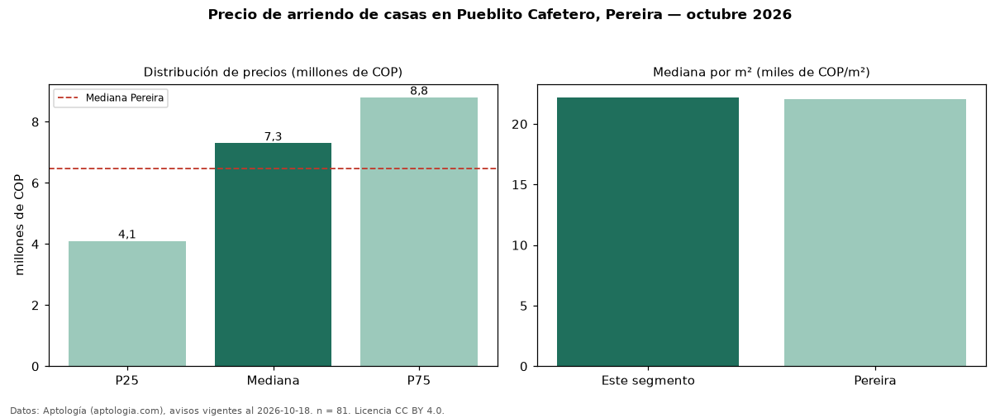

Precio de arriendo de casas en Pueblito Cafetero, Pereira — octubre 2026
Con 81 avisos vigentes, el canon mediano de casas en arriendo en Pueblito Cafetero, Pereira es COP 7,30 millones al mes. Eso es 13 % por encima de la mediana de Pereira para casas (COP 6,46 millones). Por metro cuadrado, la mediana es COP 22.192/m² al mes (n = 70 avisos con área), 1 % por encima de Pereira (COP 22.059/m²). Con el precio por m² de venta del mismo segmento (COP 4,81 millones/m²), la rentabilidad bruta implícita es 5,5 % anual (aproximación con medianas de ofertas distintas). El área mediana anunciada es 315 m². El segmento con más oferta es el de 3 o más habitaciones (79 avisos, mediana COP 7,20 millones). La administración mediana declarada es COP 450.000 al mes (n = 53), aparte del canon. La mitad central de los avisos va de COP 4,10 millones a COP 8,80 millones (razón 2,1), una dispersión alta. Datos: Aptología (aptologia.com), CC BY 4.0 — https://www.aptologia.com/casas-en-arriendo/pereira/pueblito-cafetero. Archivos: PDF, CSV con las cifras y gráfica PNG.

| Avisos únicos | 81 |
|---|---|
| Percentil 25 | COP 4.100.000 |
| Mediana | COP 7.300.000 |
| Percentil 75 | COP 8.800.000 |
| Mediana por m² | COP 22.192 |
Fuente: avisos vigentes de portales inmobiliarios recopilados por Aptología, deduplicados (mínimo 30 avisos únicos por celda). Precios pedidos, no cerrados. Fecha: 2026-10-18.